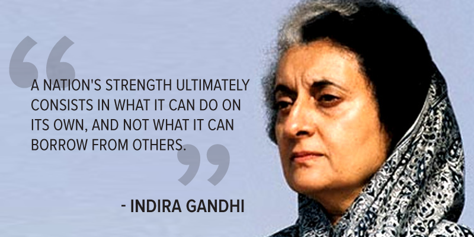
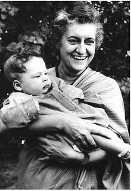

About Indira Gandhi
 Indira Gandhi was born to Kamala and Jawaharlal Nehru. Her father was
largely involved in politics andBecause of his constant fight for the cause of independence
for India, he was often imprisoned for his doing so. This led to an unaccompanied childhood,
especially after her mother's death
in 1936, when Indira was just 19-years-old.
Later in Gandhi's life, she married in March of 1942 and had two
sons. 1947 was the year when her political career truly began. Her father had just been appointed
to be the prime minister of India, and she agreed to work as his hostess. This job entailed
welcoming diplomats and other world leaders, as well as traveling alongside her father on his journeys.
However, after her father's death in 1964, another man named Lal Bahadur Shastri was called

upon to be the prime minister of India. Gandhi was appointed to be the Minister of Information and
Broadcasting. This lasted only a short time, because just two years later, he suddenly passed away.
It was because of this unexpected event Indira was placed into the position of prime minister,
making her the first woman to do so. She became extremely popular for implementing many programs
that improved India overall. She served as India's prime minister from 1966 to 1977 and then
she was reelected in 1980 and served up until her assassination in 1984.